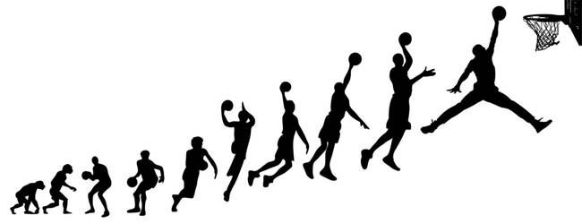

Evolution
Learn how the game has evolved throughout the years, and where it stands today.
The Beginning
Basketball was not a popular sport back when it was invented. If you read the origin page you know that basketball was meant to be an indoor sport during the winter. So how did it become a world phenomenom and how did it go from being a literal basket to a glass backboard and a metal rim? It was more than just the basketball that was changed. It was how the players played, their equipment, a basketball court, and basketball shoes. In the beginning, players wore knee pads and ran around in Converse.
Present Day
As of today arenas, shoes, and the entire game of basketball has evolved due to many influences such as unique basketball players, the science behind shooting a ball, and different coming together.
